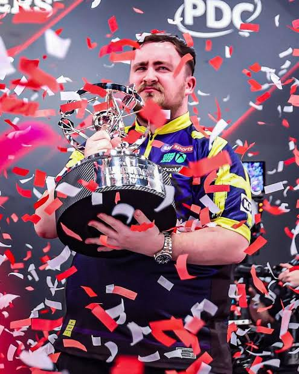

Meghívásos torna, amelyen hagyományosan a világranglista legjobb 24 (korábban 16) játékosa mérheti össze a tudását.
Az év második nagy tornája.
2026-ban sikerült bepótolnia ezt a hiányzó trófeát is.
Január vége
Milton Keynes - Marshall Arena (Anglia)